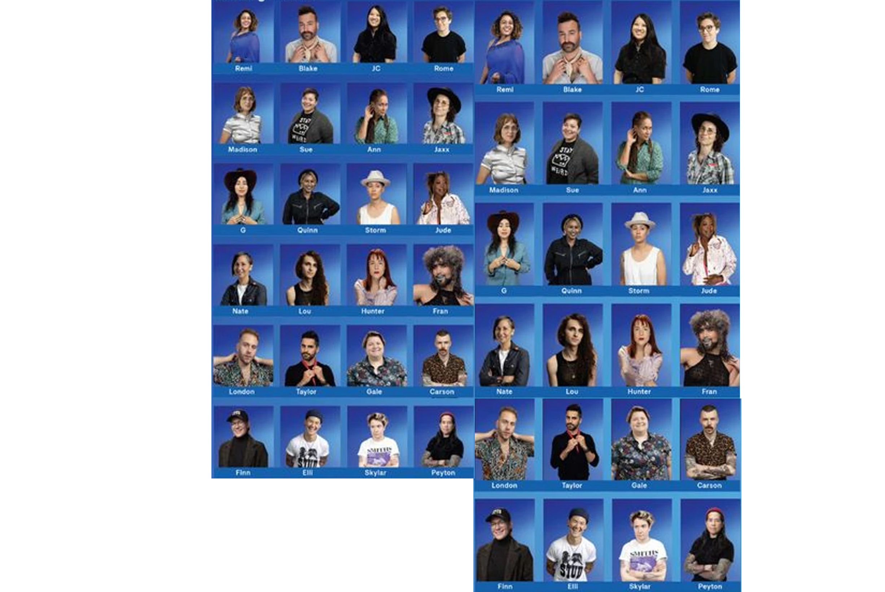

Lavet med
Caroline Berg Preisler & Laura Høgsbro
Brief
Hvordan kan Durex hjælpe med at nedbryde seksuelle barrierer?
Problem
Folk har svært ved at finde rundt i alle pronomenerne, og frygten for at henvende sig til personer uden for det cis-kønnede spektrum kombineres med usikkerhed og manglende selvtillid.
Målgruppeindsigter
Både cis og nonbinære personer ønsker at være høflige og undgå at fejlkønne andre. Desværre skræmmer denne usikkerhed ofte personer væk af frygt for utilsigtet diskrimination.
Løsning
Durex lancerer en “Non-binary udgave” af det klassiske brætspil Hvem er Hvem? Formålet med spillet er at få mennesker til at tale i nonbinære termer på en sjov, indsigtsfuld og tryg måde.
Kampagnevideo
Spilleregler
For 2 spillere
Formål med spillet
Gæt din modstanders hemmelige person, før de gætter din.
Spillets gang
Bland personkortene. Træk ét kort hver tilfældigt og sæt det i holderen. Stil spørgsmål, som kun kan besvares med “JA eller NEJ”. Fortsæt, indtil du føler dig sikker nok til at gætte din modstanders hemmelige person.
Nonbinære regler
I denne “nonbinære version” må du ikke stille det sædvanlige spørgsmål om, hvorvidt karakteren er mand eller kvinde, da alle karakterer identificerer sig som nonbinære. Du må kun tiltale karaktererne som de/dem (f.eks. “Har de overskæg?” og “Nej, det har de ikke”).
Der gives ingen straf eller minuspoint for at fejlkønne i spillet, da formålet er at oplyse og forhåbentlig skabe gode vaner omkring kønsneutrale pronomener.
Husk:
I den virkelige verden behøver du ikke på forhånd at antage, at nogen bruger de/dem. Præsenter dig blot med dine foretrukne pronomener og spørg, hvad de ønsker at blive omtalt som.
(F.eks. “Hej, jeg hedder ‘navn’, og jeg bruger ‘foretrukne pronomener’. Hvad med dig?”)
Karakterdesign
Valg af fotos
Vi valgte at redesigne alle karaktererne med billeder af autentiske og virkelige mennesker.
Samtidig kan det være med til at fjerne nogle stereotyper, såsom i det oprindelige Hvem er Hvem?-design, hvor øjenvipper indikerer, at karakteren er kvinde, og kort hår definerer mænd.

Brætspillet